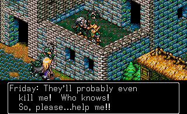
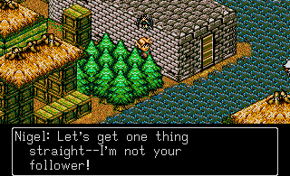
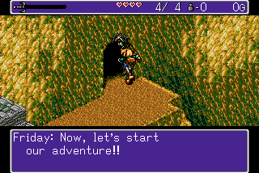
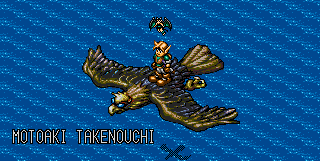

GAMUL DATE 312. Что бы это могло значить? Скорей всего, это дата - триста двенадцатый год. А что такое GAMUL? Даже для меня это до сих пор остаётся загадкой.
События игры получают своё начало в развалинах древнего города Jypta. Главный герой игры, лесной эльф по имени Найджел, исследует это место в поисках чем бы поживиться. Вором Найджела не назовёшь, но сюда он пришёл, чтобы забрать всё что плохо лежит. Найджел является охотником за сокровищами.

Найджел (Nigel), Ryle в оригинале (Япония) и во Франции, в немецкой версии - Niels, находит древнюю статуэтку Statue of Jypta, после чего отправляется в город Kalva. Да, у нас имеются региональные различия этой игры, которые заключаются в разных вариациях названий и имён. Но мы будем опираться на всемирную версию, где Ryle в паспортном столе "Ведь и без того мало путаницы в играх" поменял имя на Nigel.

В городе Kalva у Найджела происходит встреча с покупателем - стариком, который прибывает в город на плоту. После разговора с Найджелом, в котором старик отмечает способности первого, тот с радостью покупает Statue of Jypta за 2.000 золотых. В момент, когда старик делится тем, что завидует Найджелу и его приключениям, последнему что-то попадает в глаз...

Ну, это если судить по кат-сцене... но, наверное, она запорхнула в рюкзак на спине Найджела.
Да, "она" - потому что это девочка. И даже не фея, а лесная нимфа!
Зовут твою новую вайфу - Фрайди (Friday). "Пятница" запрыгнула на Найджела не от хорошей жизни -
за ней гналась компания из двух "M" и одной "S" (Весь мир делится на что? Правильно).
Девушка с хлыстом, возглавляющая сей поход против ведьм нимф, требует у Найджела,
чтобы тот выдал ей девчонку. Вторую твою новую вайфу зовут Кайла (Kayla).

Причиной этих разборок стало то, что Фрайди знает, где спрятаны легендарные сокровища Короля Нола (King Nole), вот только не хочет делиться этой информацией с данной троицей. Когда Найджел услышал о сокровищах, то чисто из "джентльменских" побуждений решил впрячься за свою новую знакомую. Бедняжка так была напугана, что сказала Найджелу, что чтобы заставить её говорить, эти трое могут сделать с ней всё что угодно, и даже убить! Конечно это заставит её говорить, а как иначе?

Пока Найджел воображал кучу сокровищ, которую ему сулит это приключение, наша троица разбойников уже поднималась на второй этаж к нему и Фрайди. Нимфа не растерялась и попросила Найджела быстрее шевелить булками. Вместе они скрываются от преследователей за углом дома, и те пробегают мимо них, тем самым вырываясь вперёд в этой гонке за сокровищами. Найджел и Фрайди наконец представляются друг друг по имени, после чего Фрайди просит Найджела следовать за собой. На что Найджел отвечает, что он не ведомый. То есть доминировать в их паре будет он. Вот так видится сюжет детской игры, когда ты двадцатилетний парень с кучей фигни в голове...

Наша парочка берёт билет в один конец в виде здоровенной птицы, которая опустошила карманы Найджела, ведь обошлась ему в 2.000 золотых. Оказалось, что сокровища спрятаны где-то в недрах острова, который находится вдали от основого континента. Корабль ходит туда раз в месяц, но у Найджела не было времени, чтобы ждать. По правде говоря, Фрайди не знает точное месторасположение сокровищ, поэтому Найджелу остаётся надеяться на своё внутреннее чутьё на сокровища.

По прибытии на остров, Найджел спрыгивает с птицы на землю, и после непродолжительного разговора Фрайди говорит фразу "Now, let's start our adventure!!". И это вполне заслуженно. Играющего ждёт интересное путешествие по острову, полному различных монстров и опасностей! Вам предстоит побывать не в одном подземельи и не в одном городе. Потрясающая история о спасении принцессы (да, такое бывает), о предательстве и о поиске сокровищ! Несколько вариантов экипировки, каждый со своими уникальными свойствами. И даже целый один, но зато какой сайд-квест!

Потрясающая музыка от Мотоаки Такэноучи (Motoaki Takenouchi), которая до сих пор играет в моём плейлисте, дополняет эту прекрасную игру, которую я не перестаю любить вот уже больше десяти лет! И если хотя бы одному человеку я помогу решиться на то, чтобы дать этой игре шанс, то значит всё это было не зря...